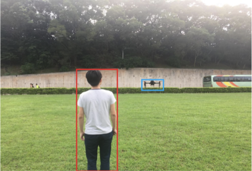
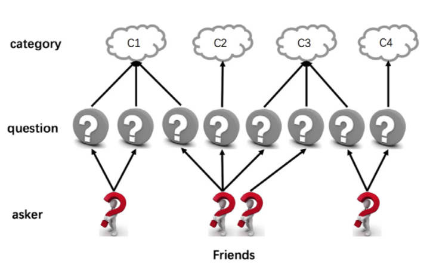
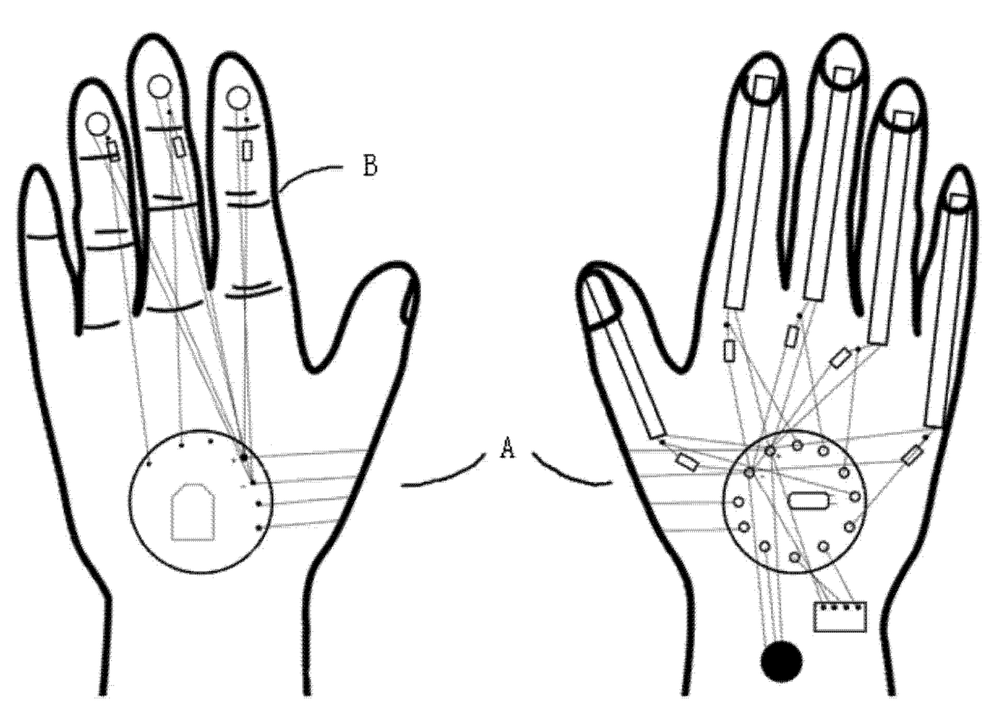

A Programmer and a Machine Learning Fan on the Go.
News! Two papers accepted by AAAI 2019.
News! Join VCLA@UCLA as a Graduate Student Researcher.
News! Join Didi Research Institute as a machine learning engineer for autonomous vehicles.
About Me
I’m Chi Zhang – a graduate student of Department of Computer Science, University of California - Los Angeles. I’m now a graduate student researcher at Center for Vision, Cognition, Learning and Autonomy, advised by Professor Song-Chun Zhu.
My reseach interests include but are not limited to
- Computer Vision
- Machine Learning
I used to work with Professor Dit-Yan Yeung at Hong Kong University of Science and Technology and Professor Deng Cai at my home institution, Zhejiang University.
I serve/served as
- Conference reviewer: CVPR 2019
[CV] [Email]
Publications
-

Learning Unmanned Aerial Vehicle Control for Autonomous Target Following
Siyi Li, Tianbo Liu, Chi Zhang, Dit-Yan Yeung, Shaojie Shen
Proceedings of the Twenty-Seventh International Joint Conference on Artificial Intelligence (IJCAI), 2018
-

Question Retrieval for Community-based Question Answering via Heterogeneous Social Influential Network
Zheqian Chen, Chi Zhang, Zhou Zhao, Chengwei Yao, Deng Cai
Neurocomputing, Volume 285, Pages 117-124
-

A Method of Exact 3D Modeling Based on Natural Gestures via Data Gloves
Xiangdong Li, Sihong Lv, Yikun Wang, Xiaowo Sun, Chi Zhang
Publication number: CN104778746 A
Experience
-

Machine Learning Engineer
Autonomous driving
2017.04-2017.06 | Hangzhou, Zhejiang, China
Didi Research Institute
-

Research Intern
Target following with drones
2016.09-2017.03 | Clear Water Bay, Kowloon, Hong Kong
Hong Kong University of Science and Technology
-

Research Assistant
Automatic number plate detection
2015.03-2016.06 | Hangzhou, Zhejiang, China
State Key Lab of CAD & CG, Zhejiang University
Projects
-

MXNet
2016.09 - Now
-

Automatic Number Plate Detection
2016.02-2016.06